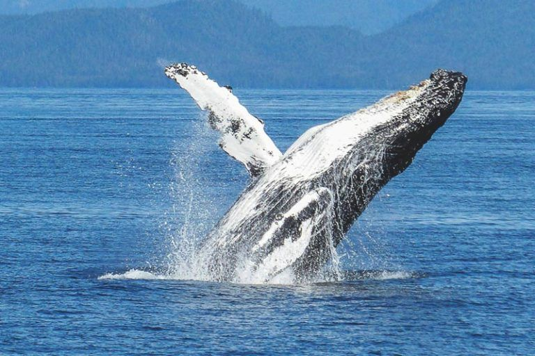

La biodiversidad marina se define como una variedad inmensa de seres vivos microscópicos y macroscópicos que habitan en los mares y océanos del planeta.
Alude también a la grandiosa diversidad genética de las especies, que posibilita múltiples y maravillosas formas de vida.
El término biodiversidad, según acuña el Convenio Internacional sobre la Diversidad Biológica, engloba toda la diversidad de especies, de seres vivos que han ido poblando la Tierra en su devenir evolutivo desde hace millones de años, de acuerdo a procesos naturales y a la creciente intervención del hombre.
Cuando hablamos de biodiversidad marina nos referimos entonces a toda la flora y fauna que conforman los ecosistemas conformados a lo largo de unos cuatro mil millones de años de evolución de la Tierra, la cual comenzó en los mares.

¿Dónde se encuentra el ecosistema marino?
Dónde se encuentra el ecosistema marinoEl mundo marino está formado por ecosistemas de una variada cantidad de especies vegetales y animales que interactúan de forma armónica en ambientes muy elevados en contenido de sal en el agua.
Estos ecosistemas cubren un 70 % de la superficie planetaria, mayoritariamente compuesta de agua.
Un ecosistema marino, por tanto, dista mucho de parecerse a los ecosistemas terrestres. Tienen una diversidad biológica diferente, en estructura y funcionamiento.
¿Cuáles son los organismos marinos?
Cuáles son los organismos marinosEn el medio marino, la elevada densidad que tiene el agua salada garantiza la denominada vida en suspensión, que discurre con un bajo gasto energético.
Y es que el agua posee una capacidad mucho mayor de absorción de energía, característica que le concede mayor estabilidad que el medio terrestre, porque la temperatura se mantiene constante, al punto de que mares y océanos de la Tierra son responsables del sostenimiento de la temperatura global, porque controlan el clima de la superficie terrestre a nivel de las costas.
Además, el agua de mar es mucho más densa que el aire, nada más y nada menos que 830 veces, y la gravedad afecta de forma diferente a los organismos marinos.
Esto permite la abundancia de organismos vivos fascinantes como el plancton y necton y posibilita que muchas formas de vida se desarrollen en esa enorme masa de agua que ocupa el 70% de la superficie planetaria.
El plancton agrupa a todos los organismos acuáticos que, aunque no son capaces de nadar, se movilizan gracias al capricho de las corrientes acuáticas. La palabra plancton procede de la voz griega que significa “errante” o “vagabundo”.